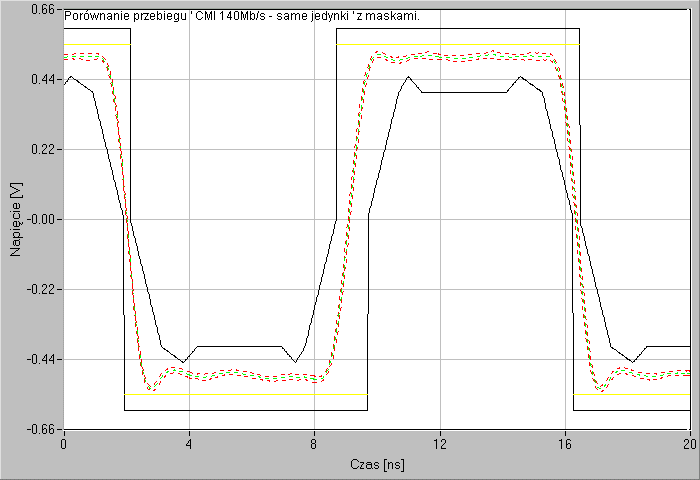
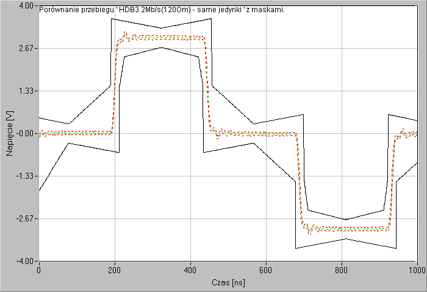
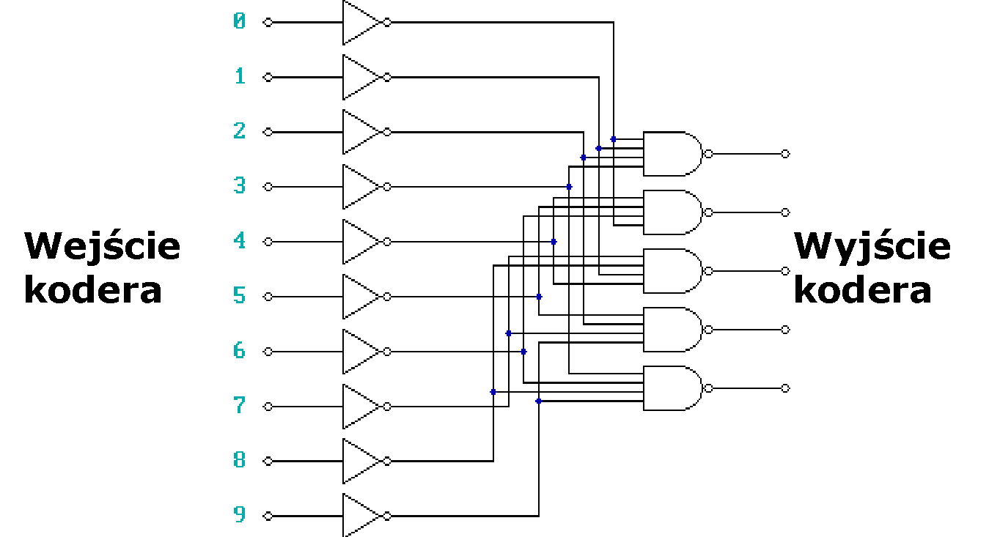
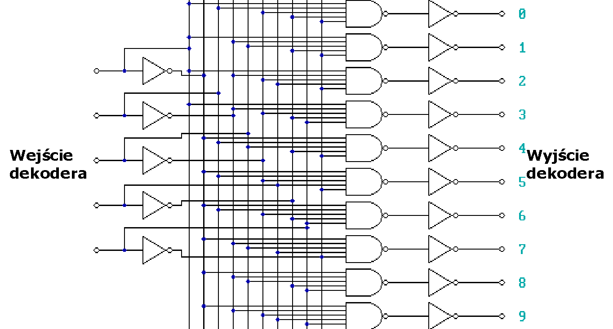

<!-- .slide: class="title-slide" --> # Kodowanie sygnałów --- ## Plan wykładu - podstawowe pojęcia kodowe, - odległość Hamminga i waga kodu, - maski telekomunikacyjne i właściwości sygnału, - HDB, kod „2 z 5” oraz kody splotowe. --- ## Kod i słowo kodowe Kod przypisuje symbolom źródłowym ciągi symboli kodowych. **Słowo kodowe** jest wynikiem takiego przypisania. Cele kodowania obejmują między innymi reprezentację informacji, synchronizację transmisji oraz wykrywanie i korekcję błędów. --- ## Odległość Hamminga Odległość Hamminga to liczba pozycji, na których dwa ciągi o tej samej długości się różnią. `d(10001, 10000) = 1` `d(00010, 10100) = 3` Minimalna odległość kodu określa jego zdolność do wykrywania i korekcji błędów. --- ## Wzór na odległość Hamminga  --- ## Materiał: odległość Hamminga <video controls preload="metadata"><source src="media/videos/P02mJhS9qQ4.mp4" type="video/mp4"></video> --- ## Sprawdź: odległość Hamminga <div class="code-lab hamming-lab"> <label>Pierwszy ciąg<input class="hamming-x" value="10001" inputmode="numeric" maxlength="16"></label> <label>Drugi ciąg<input class="hamming-y" value="10000" inputmode="numeric" maxlength="16"></label> <div class="lab-result hamming-result" aria-live="polite"></div> </div> --- ## Waga kodu Waga słowa kodowego jest liczbą jego niezerowych symboli. Dla kodów binarnych oznacza po prostu liczbę jedynek. `w(10110100) = 4` --- ## Kody systematyczne i niesystematyczne <div class="columns"><div> **Systematyczne** Słowo kodowe zawiera wprost bity informacji oraz bity kontrolne. </div><div> **Niesystematyczne** Bity informacji nie są w słowie kodowym bezpośrednio rozpoznawalne; całość jest przekształcona. </div></div> --- ## Maska telekomunikacyjna Maska określa dopuszczalne granice parametrów sygnału w czasie, np. amplitudy i narastania zboczy. Pomiar jest poprawny, gdy rzeczywisty przebieg pozostaje w granicach wyznaczonych przez maskę. --- ## Maska telekomunikacyjna: PDH 140 Mb/s <div class="media-gallery single-visual"> <p></p> </div> --- ## Maska telekomunikacyjna: PCM 2 Mb/s <div class="media-gallery single-visual"> <p></p> </div> --- ## Pożądane właściwości kodu transmisyjnego - ograniczone składowe stałe, - możliwość odzyskania zegara, - mała liczba długich serii zer lub jedynek, - odporność na błędy, - rozsądna nadmiarowość i przepływność. --- ## HDB Kody HDB (*High Density Bipolar*) zastępują długie serie zer wzorcami zawierającymi impulsy naruszające regułę bipolarności. Pozwala to utrzymać synchronizację, nawet gdy źródło generuje długi ciąg zer.  --- ## Synchronizacja w HDB3 W HDB3 ciąg czterech zer może zostać zastąpiony wzorcem: AMI (*Alternate Mark Inversion*): kolejne `1` to naprzemienne impulsy `+` i `−`, a `0` to brak impulsu. <svg class="hdb3-wave-svg" viewBox="0 0 920 260" role="img" aria-label="Przebieg B00V: dwa dodatnie impulsy oddzielone dwoma zerami"> <line x1="105" y1="165" x2="835" y2="165" class="axis" /> <line x1="105" y1="55" x2="105" y2="188" class="axis" /> <text x="65" y="67" class="level">+V</text><text x="73" y="174" class="level">0</text> <path d="M105 165 H145 V65 H285 V165 H565 V65 H705 V165 H835" class="wave" /> <text x="215" y="225" class="label-b">B</text><text x="355" y="225" class="symbol">0</text><text x="495" y="225" class="symbol">0</text><text x="635" y="225" class="label-v">V</text> </svg> <div class="hdb3-legend"><div><strong>B</strong><span>zwykły impuls zgodny z AMI</span></div><div><strong>V</strong><span>impuls o tej samej polaryzacji, celowo naruszający AMI</span></div></div> Ponieważ `B` i `V` mają tu tę samą polaryzację dodatnią, dekoder rozpoznaje `B00V` jako zastąpione zera, a nie dane użytkownika. --- ## Kod stałowagowy „2 z 5” - Każde słowo ma pięć bitów, z których dokładnie dwa mają wartość `1`. - Jest to kod nieliniowy i stałowagowy. - Nie każde pięciobitowe słowo jest prawidłowe, co umożliwia wykrywanie części błędów. --- ## Odporność na błędy kodu „2 z 5” Jeżeli podczas transmisji zmieni się pojedynczy bit, liczba jedynek przestaje wynosić dwa. Dekoder może wtedy wykryć błąd, choć nie musi umieć go poprawić. --- ## Koder i dekoder „2 z 5” <div class="columns"><div> **Koder** Mapuje symbol wejściowy na jedno z dopuszczalnych słów o wadze dwa. </div><div> **Dekoder** Sprawdza wagę słowa, rozpoznaje kod i sygnalizuje nieprawidłową kombinację. </div></div> --- ## Schemat kodera „2 z 5” <div class="media-gallery single-visual"> <p></p> </div> --- ## Schemat dekodera „2 z 5” <div class="media-gallery single-visual"> <p></p> </div> --- ## Zastosowanie kodu „2 z 5” Jednym z historycznych zastosowań jest kod kreskowy *Interleaved 2 of 5*, używany między innymi do oznaczania przesyłek i produktów.  --- ## Generator kodu „2 z 5” <div class="code-lab two-of-five-lab"> <label>Cyfra wejściowa<input class="two-of-five-digit" type="number" value="6" min="0" max="9" step="1" inputmode="numeric"></label> <div class="lab-result two-of-five-result" aria-live="polite"></div> </div> --- ## Kod splotowy Kodowanie splotowe (*convolutional coding*) tworzy ciąg wyjściowy zależny od bieżących i wcześniejszych bitów wejściowych. Stan kodera jest pamięcią wcześniejszych symboli, a dekodowanie wybiera najbardziej prawdopodobną sekwencję wejściową. --- ## Kodowanie splotowe: intuicja <div class="convolutional-flow"> <div class="flow-step"><strong>Wejście</strong><code>u(k)</code><small>bieżący bit</small></div> <div class="flow-arrow">→</div> <div class="flow-step"><strong>Rejestr</strong><code>u(k−1), u(k−2)</code><small>bity z poprzednich chwil</small></div> <div class="flow-arrow">→</div> <div class="flow-step"><strong>Generatory</strong><code>XOR mod 2</code><small>wybrane bity są sumowane</small></div> <div class="flow-arrow">→</div> <div class="flow-step"><strong>Wyjście</strong><code>c₁(k), c₂(k)</code><small>bity kodowe</small></div> </div> Rejestr pamięta wcześniejsze bity, dlatego wynik zależy od bieżącego bitu i historii wejścia. Nadmiarowe bity zwiększają szansę poprawnego odtworzenia informacji po błędach transmisji. --- ## Przykład kodera splotowego `1/2` <div class="convolutional-example"> <div class="register-label">Rejestr przesuwny: po każdej chwili bit przesuwa się o jedno miejsce w prawo</div> <div class="register-row"> <div class="register-cell input"><code>u(k)</code><small>bieżący bit</small></div><span>→</span> <div class="register-cell"><code>u(k−1)</code><small>pamięć 1</small></div><span>→</span> <div class="register-cell"><code>u(k−2)</code><small>pamięć 2</small></div> </div> <div class="generator-grid"> <div class="generator-card"><strong>Generator 1</strong><div><code>u(k)</code><b>⊕</b><code>u(k−1)</code><b>⊕</b><code>u(k−2)</code><b>→</b><code>c₁(k)</code></div></div> <div class="generator-card"><strong>Generator 2</strong><div><code>u(k)</code><b>⊕</b><code>u(k−2)</code><b>→</b><code>c₂(k)</code></div></div> </div> </div> Każdy generator wybiera inne odczepy rejestru. Jeden bit wejściowy tworzy więc dwa bity wyjściowe; stosunek szybkości kodu wynosi `1/2`. Na następnym slajdzie: dlaczego właśnie dwa różne generatory są użyteczne? --- ## Po co dwa generatory? Oba generatory obserwują ten sam bieżący bit, ale korzystają z innych odczepów rejestru: <div class="columns"><div> **Generator 1** Łączy `u(k)`, `u(k−1)` oraz `u(k−2)`. </div><div> **Generator 2** Łączy tylko `u(k)` oraz `u(k−2)`. </div></div> Powstają więc dwa różne sprawdzenia tej samej historii wejścia, a nie dwie kopie tego samego bitu. --- ## Co daje nadmiarowość? Z jednego bitu `u(k)` powstaje para `c₁(k), c₂(k)`. Jeżeli zakłócenie zmieni jeden symbol, drugi symbol oraz zależność od poprzednich chwil pomagają dekoderowi wybrać najbardziej prawdopodobny ciąg wejściowy. <div class="encoding-benefit"> <div class="benefit-step"><div class="bit-token">u(k)</div><strong>1 bit wejściowy</strong></div> <div class="benefit-arrow">→</div> <div class="benefit-step"><div class="bit-pair"><span>c₁(k)</span><span>c₂(k)</span></div><strong>2 bity kodowe</strong></div> <div class="benefit-arrow">→</div> <div class="benefit-step"><div class="benefit-mark">?</div><strong>więcej wskazówek dla dekodera</strong></div> </div> Liczba generatorów dobierana jest jako kompromis: większa nadmiarowość zwiększa odporność, ale zajmuje więcej pasma. --- ## Koder splotowy: spróbuj sam <div class="code-lab convolutional-lab"> <label>Ciąg wejściowy<input class="convolutional-input" value="10110" inputmode="numeric" maxlength="12"></label> <div class="lab-result convolutional-result" aria-live="polite"></div> </div> --- ## Systematyczne a niesystematyczne kodowanie splotowe - W wersji systematycznej jeden z bitów wyjściowych jest kopią bitu wejściowego. - W wersji niesystematycznej wszystkie bity wyjściowe są kombinacjami bieżącego i zapamiętanych bitów. - Oba podejścia są używane zależnie od wymagań systemu i dekodera. --- ## Podsumowanie - Odległość Hamminga i waga pomagają opisać właściwości kodu. - Kody transmisyjne mogą wspierać synchronizację i odporność na błędy. - HDB, „2 z 5” i kody splotowe rozwiązują różne problemy transmisyjne.